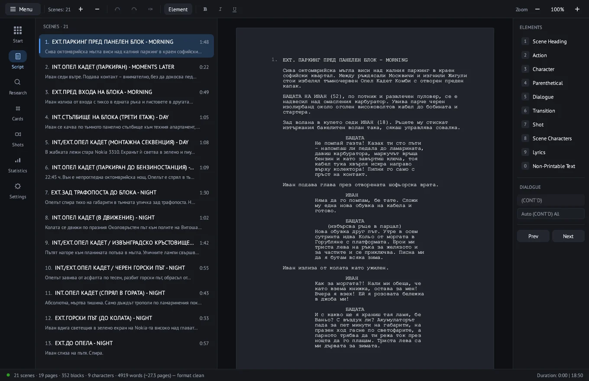

Revisions that behave like production
Blue → Pink → Yellow → … with dated sets and page-count baselines. Changed blocks get coloured margin bars; revision-pages mode shows only the current issue.
Free & open source · v0.8.13
ScriptCraft is a local-first screenwriting studio built around the part of the job most tools treat as an add-on: production revisions.
macOS, Windows and Linux · Apache-2.0 · no account · your files stay on your disk

Why ScriptCraft
A screenplay is not finished when the draft is. It is finished when pages are locked, scenes are numbered, revisions are issued, and everyone is working from the same coloured pages.
Blue → Pink → Yellow → … with dated sets and page-count baselines. Changed blocks get coloured margin bars; revision-pages mode shows only the current issue.
Open .kitsp projects directly. Import Final Draft .fdx, Fade In .fadein and Fountain. Export PDF, FDX, Fade In, Fountain or Markdown.
KIT's Final Draft A4 geometry, 12 pt Courier, title page, scene numbers, (MORE)/(CONT'D), and locked pages that keep their issued numbers.
Typewriter scrolling, focus mode, find and replace, a scene navigator, spellcheck in English, Bulgarian and Russian, four page faces including Liberation Mono, and 35 themes — including the writer themes added in v0.8.12 and KIT light and dark.
Projects live on your disk as KIT-compatible files. Autosave and crash recovery are built in. Nothing is uploaded, and there is no account to create.
Apache-2.0 Rust source. Read it, build it, audit it, or send a patch. The app has no telemetry and no hidden service dependency.
Interchange
ScriptCraft keeps your scene structure, title page and scene numbers when it can, and tells you when a format cannot carry something.
| Format | Open | Save |
|---|---|---|
KIT Scenarist .kitsp | Yes | Yes |
Final Draft .fdx | Yes | Yes |
Fade In .fadein | Yes | Yes |
Fountain .fountain | Yes | Yes |
Markdown .md | — | Yes |
| — | Yes |
Dual dialogue is native in FDX and Fade In. Fountain and Markdown exports mark it as consecutive dialogue and say so in the status line.
A look inside
Pick a palette and keep the page you are writing. The editor and the PDF use the same line grid, so what you see is what prints.

Get ScriptCraft
Every build is published on GitHub Releases with a SHA-256 checksum. The in-app updater verifies the download before it replaces the app.
The macOS build is ad-hoc signed, and Windows/Linux builds are unsigned. On first launch, macOS may ask you to right-click → Open. There is no Developer ID or notarisation yet.
Questions
Yes. It is Apache-2.0 open source. There is no account, no trial timer, no subscription and no telemetry.
Yes. .kitsp is the native project format. ScriptCraft preserves unknown sidecar rows, so opening and saving a KIT project does not throw away data it does not understand.
Import and export both work for Final Draft .fdx and Fade In .fadein. Scene numbers, the title page, notes and — where the format supports it — dual dialogue are carried across.
Yes. The body is regular Courier, and only the title-page title and page numbers are bold, exactly as KIT Scenarist prints them. The editor uses the same 12 pt grid, so page breaks match.
The app checks GitHub Releases and can download, verify and install a newer build in place. Because the builds are not signed yet, Gatekeeper or SmartScreen may still ask you to confirm the first launch.
Open an issue on GitHub. Include your platform, the app version and, if the app crashed, the panic.log written next to your configuration.